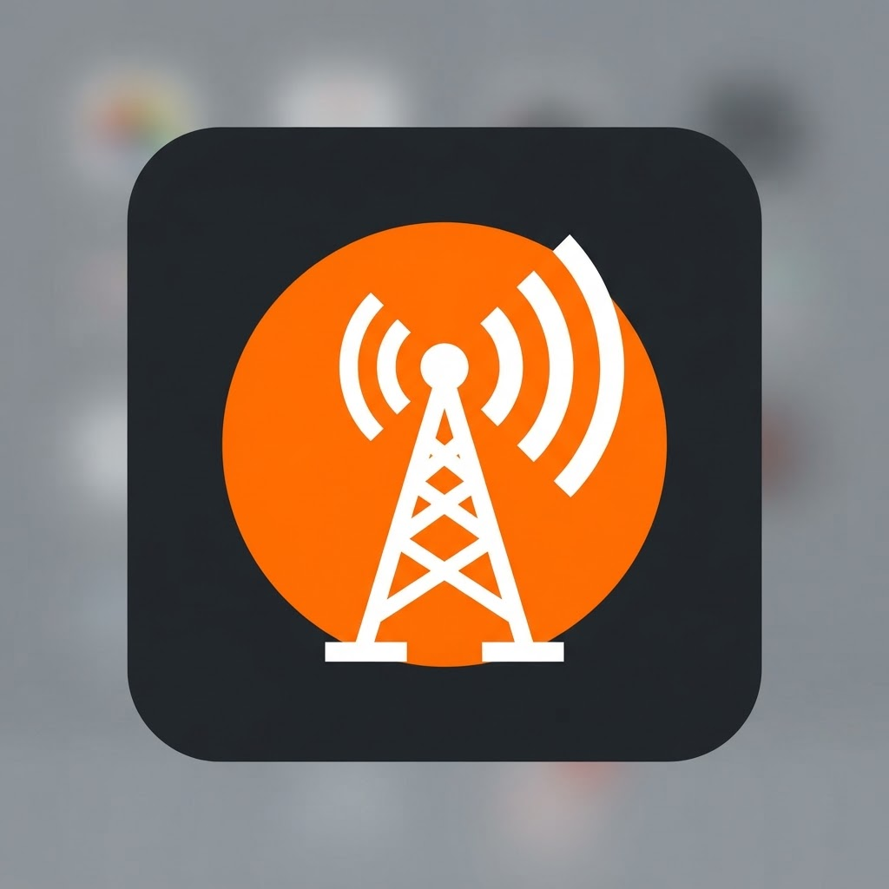

Radio online
sikodark
Detenido

Sonando ahora
Conectando…
→Iniciando sikodark v6...
◉ Reproducidos recientemente
Tus preferidos
Las canciones aparecerán aquí cuando empieces a escuchar la radio.
Información del artista
Cargando…